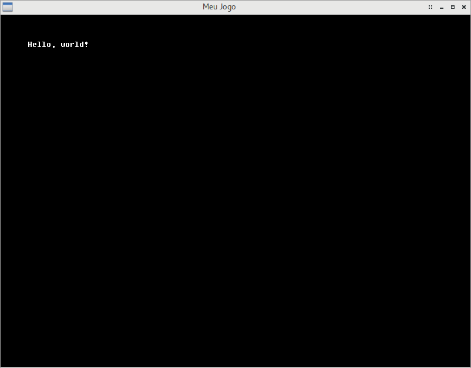

Escrevendo texto na tela
Para um pequeno teste básico, aprenderemos, agora, a desenhar texto na tela.
Uma fonte de texto é carregada com métodos muito similares a uma textura, como veremos mais adiante. Porém, a Oficina possui algumas fontes de texto já predefinidas para uso imediato. Neste exemplo, usaremos a fonte Fixedsys Excelsior para escrever texto na tela.
Carregando e descarregando uma fonte padrão
Vá até o arquivo src/MinhaCena.hpp.
Lidaremos, agora, diretamente, com uma estrutura de renderização, então precisaremos do cabeçalho da Oficina onde as estruturas e funções de renderização estão definidas. Abaixo da inclusão do cabeçalho oficina2/canvas.hpp, digite o seguinte:
#include <oficina2/render.hpp>
E logo abaixo da definição da nossa matriz mvp, ainda na região private da classe, adicione este novo campo:
ofFont fonte;
Vá, agora, para o arquivo src/MinhaCena.cpp. Você deverá adicionar aos métodos citados estes códigos:
// Em "void MinhaCena::load()":
fonte = ofTexturePool::loadDefaultFont(ofFontFaceFixedsysExcelsior);
// Em "void MinhaCena::unload()":
fonte.unload();
A explicação para estas linhas é bem intuitiva. No caso do código adicionado a load, trata-se do carregamento de uma das fontes predefinidas da Oficina, alteráveis através de uma enumeração; aqui usamos a fonte Fixedsys Excelsior. No caso de unload, o código apenas assegura que a fonte seja descarregada da GPU quando nossa cena for descarregada.
É importante notar que a Oficina descarrega toda e qualquer fonte/textura da GPU ao abandonar a aplicação, porém, para evitar uso excessivo de recursos do computador, é aconselhável descarregar tudo o que não for mais usado ao fim de uma cena.
Você pode compilar o projeto para verificar o carregamento da fonte. Caso o carregamento seja feito com sucesso, você verá, no log do console, uma linha escrita da seguinte forma:
INFO: ofLoadDefaultFont: Uploaded Fixedsys Excelsior (Hardcoded) to VRAM
Definindo e posicionando um texto
Agora, por fim, desenharemos texto na tela.
Ainda no arquivo src/MinhaCena.cpp, vá até o método void MinhaCena::draw e adicione o seguinte código:
fonte.write("Hello, world!", glm::vec2(50.0f), mvp, glm::vec4(1.0f));
O código acima é um método da classe ofFont, que recebe, respectivamente, como parâmetro:
- Um texto a ser exibido (pode ser uma literal ou um texto compatível com uma
std::string). Infelizmente, atualmente, umaofFontsó suporta texto ASCII sem acentuação, exceto pelo acento grave, que também pode ser usado no REPL -- sobretudo em IronScheme; - A posição do texto (apenas eixos X e Y de coordenadas são suportados). Utilizando abstrações da GL Mathematics, definimos esta posição como 50x50;
- A matriz ModelViewProjection da cena. Teoricamente, você também pode reposicionar o texto usando diretamente essa matriz, especialmente se você tiver um texto sendo renderizado de dentro de uma
ofEntity(que veremos a seguir), por exemplo. Neste caso, a posição do texto citada anteriormente se tornaria uma posição relativa à posição estipulada na matriz Model; - Um vetor de quatro dimensões, definindo a COR do texto a ser exibido, em RGBA (vermelho, verde, azul, alpha/transparência) normalizado (valores de 0 a 1). Utilizando abstrações da GL Mathematics, definimos esta cor como branco sólido (R: 1, G: 1, B: 1, A: 1).
Compile e execute o jogo mais uma vez. Você deverá ver texto inserido na tela.

O arquivo src/MinhaCena.cpp deverá estar com o seguinte código, agora:
#include "MinhaCena.hpp"
void MinhaCena::init()
{
glm::mat4 view =
glm::lookAt(
glm::vec3(0.0f, 0.0f, -1.2f),
glm::vec3(0.0f, 0.0f, 0.0f),
glm::vec3(0.0f, -1.0f, 0.0f));
glm::mat4 projection =
glm::ortho(
0.0f,
800.0f, -600.0f,
0.0f, 1.0f, 10.0f);
mvp = projection * view;
}
void MinhaCena::load()
{
fonte = ofTexturePool::loadDefaultFont(ofFontFaceFixedsysExcelsior);
}
void MinhaCena::unload()
{
fonte.unload();
}
void MinhaCena::update(float dt)
{
}
void MinhaCena::draw()
{
fonte.write("Hello, world!", glm::vec2(50.0f), mvp, glm::vec4(1.0f));
}